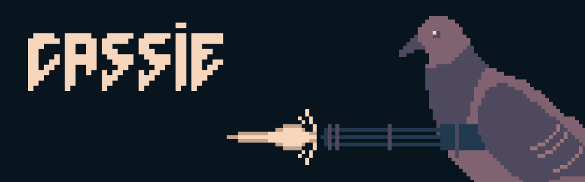
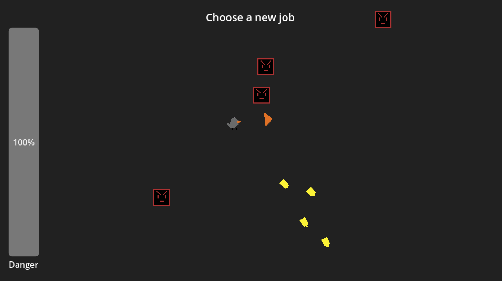
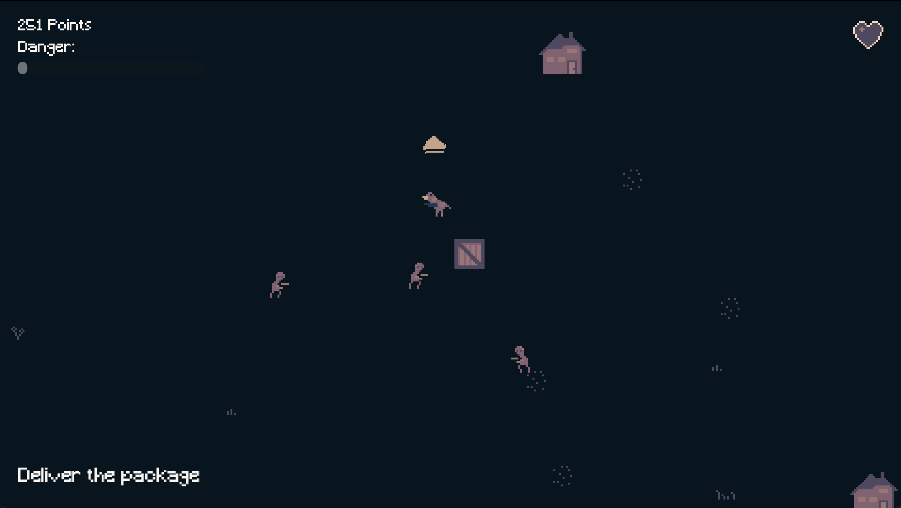
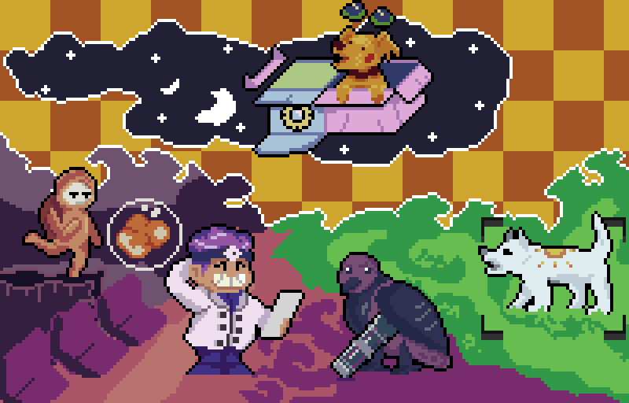

I decided to participate in Ludum Dare this year. Ludum Dare is a biannual game jam, where you create a game catering to a theme that is announced when the jam starts. There are several categories, but I decided to participate in the “compo”, the competition, where you create a game from scratch, by yourself, in 48 hours.
This years theme was delivery. I had some trouble coming up with ideas that felt fun and fit the theme, but after some tinkering I landed on my final idea: A pidgeon that needs to deliver packages in a village. That village is under attack by monsters, so you need to protect yourself with a gun. The more points you score, the more monsters will spawn, forcing you to be careful and also upgrade your weapon.
I can now proudly present: Cassie, the carrier pidgeon. Download from Ludum Dare.

Developing a game from scratch in such a small amount of time is challenging. There’s so many parts needed to make a playable game that you really need to focus on a tiny amount of features to complete it. To give you a rough idea of how I spent my weekend:
- I came up with an idea.
- I implemented basic character controls and shooting.
- I added monsters you can shoot.
- I drew placeholder graphics.
- I added jobs so you can pick up packages.
- I added houses you deliver the packages to.
- I randomized house positions because I was too lazy to do proper level design.
- I added health you can lose when you’re attacked.
- I added a game over screen.
- I added a menu screen.
- I tweaked the spawning behavior of monsters.
- I added upgradable shooting cooldown.
- I fixed weird bugs when switching between menu and game.
- I added a system for jobs with varying difficulty.
- I added an auto fire upgrade for the gun.
- I tweaked the spawning behavior of monsters (again).
- I made some background music.
- I drew prettier graphics.
- I fixed some bugs of the weapon upgrades and the player’s walking speed.
- I added explosion effects and sound effects.
- I tweaked the spawning behavior of monsters (again).
- And finally I exported the game and tested it a bit more.
That’s so much stuff! And that does not even include all the fun ideas I had for different weapon types, more enemy types, different maps and so on. I really thought that I could at least implement different bullet types, but that was reduced to being able to upgrade your shooting speed.
Drawing graphics was also interesting, since I’m not really that great at it. This is what the game looked like while I was still prototyping:

All the things are there, but you would probably be a bit more into it if the game looked nice. I turned to lospec.com, a great resource for things about pixel art, and decided to go with the Nyx8 color palette to give my game a makeover. Limiting myself to a few colors to choose from does not guarantee that the game will look nice, but reduces the number of artistic crimes I am able to commit. This is the game after I redrew everything:

Doing all the things above in only 48 hours was definitely stressful. I had a lot of fun and now can brag about a new game, but I underestimated how much the limited time influenced the amount of fun I had. The jam felt less like a fun weekend activity and more like an extended work week.
Download the game from the Ludum Dare website if you want to try it out and maybe leave a little feedback there if you like.
A few days after the jam 0X_VOID_X0 made some awesome fanart of their favorite games which I just had to share. Thank you!
